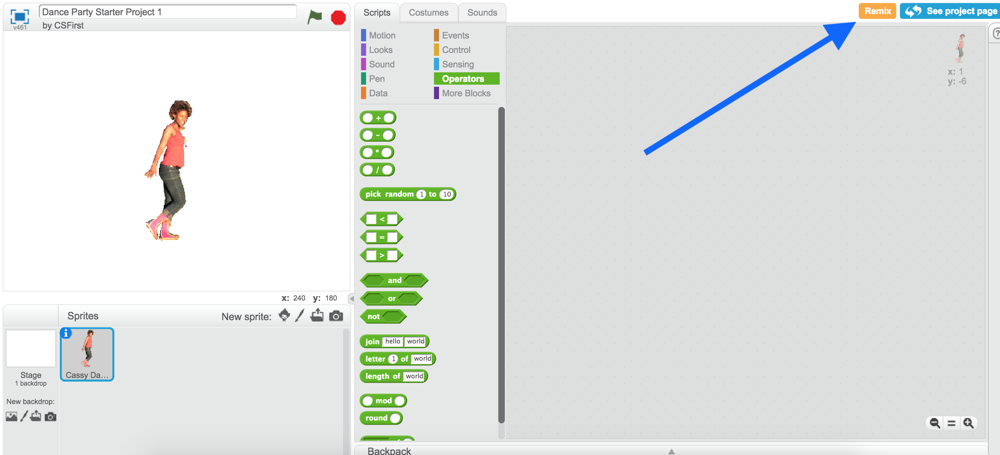
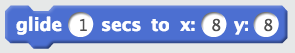
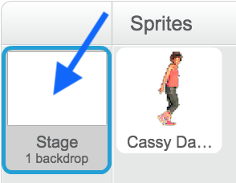
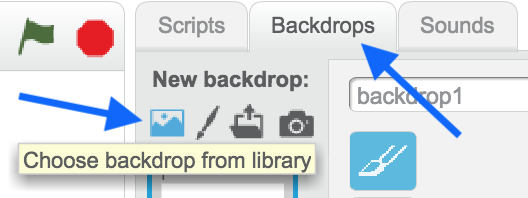

In this codelab, you'll make your first scratch project!
What you'll learn
- How to create movement in scratch.
- About loops.
Open the starter project and click Remix.

First, we are going to make Cassy dance in one spot.
Useful block for this section:
Steps
- Use Cassy's costumes to make her switch between dance moves.
- Keep Cassy dancing forever.
- Control the speed of Cassy's dancing.
Next, we are going to make Cassy dance around the screen.
Useful block for this section:

Steps
- Make Cassy glide around the screen while dancing.
- Have the dancing start when the green flag is clicked.
Finally, we are going to add music and location(s) to the dance party.
We are going to write the code for the music on the stage. Click on the stage icon next to the sprites:

Useful block for this section:
Steps
- Find backdrops you want to use as locations for the dance party.

- Choose music for Cassy to dance to from the sounds tab (next to backdrops).
- Use the play sound until done block to play the music.
- Make the music play forever.
- Have the music start when the green flag is clicked.
If you finish early, implement one or more of the following features for bonus features. Or, come up with a bonus idea of your own!